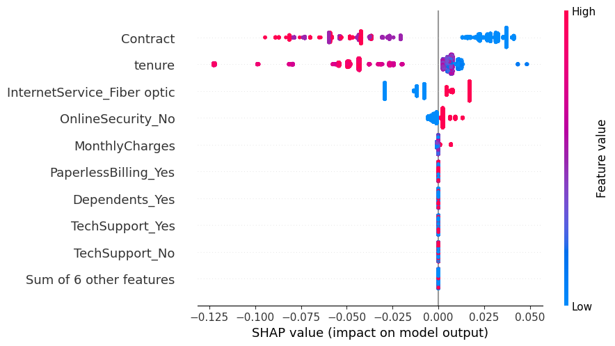

Predictive Machine Learning for Telco Customer Churn

Business Understanding
Identification
In the initial stage, the process involves identifying issues within the business context that require actions or solutions to be achieved. This process involves evaluating a business to identify areas that need improvement in order to achieve the desired business goals.
Market Research
Currently, telecommunications service customers have numerous options and can easily switch subscriptions from one service provider to another. Many customers frequently switch subscriptions due to the various promotions offered by different telecommunications service providers. The provider that offers the best service and the most competitive prices will be the customer's choice.
Marketing practitioners in this industry strive to prevent customers from switching to competing companies. Why is that? Because acquiring new customers is far more expensive than retaining loyal existing customers. Therefore, retaining existing customers is a high priority compared to acquiring new customers. This aligns with the journal article Reichheld, F.F. and Sasser, E. (1990) Zero Defections: Quality Comes to Services. Harvard Business Review, 68, 105-111.
However, retaining customers is not an easy task either. A common approach is to provide special pricing packages or bonuses to customers to prevent them from being tempted to switch to a competing company. However, if such offers are extended to all existing customers, the cost can become expensive as only a small fraction of customers tend to churn (unsubscribe) in general. There's no urgency to provide special offers or bonuses to loyal customers, as they will likely remain customers even without them.
A more effective approach is to ensure that special offers or bonuses are only given to specific customers known to have a propensity to churn. Since these offers are targeted specifically to certain customers, the cost required for promotions becomes lower.
Churn Prediction is one widely used in the industry with the aim of identifying which customers are likely to unsubscribe and understanding the symptoms or signs that arise. By paying attention to these signs, customers with a high likelihood of churning can be contacted and subsequently offered special pricing packages to prevent them from actually unsubscribing.
Case Analysis and Goals
In this case, a predictive model will be developed for a telecommunications company that offers internet services. Many customers switch subscriptions to competing companies due to more attractive pricing and services, which impacts the company's revenue loss and potentially leads to customer dissatisfaction. The company's management recognizes this issue and plans to launch promotional programs to mitigate churn rate. These promotional programs will only be offered to a group of customers deemed susceptible to churn. To make this more effective, Machine Learning is required to identify this customer group.
The goal of this predictive model is to generate a churn score for each customer, indicating whether they are predicted to unsubscribe or not. This predictive model will use predictors based on patterns of customer internet service usage on the company's network. The prediction results will then be translated into appropriate actions, as described in the preceding paragraph, in order to reduce churn, enhance customer satisfaction, and increase revenue and profitability for the company.
How can the created prediction discern customer usage patterns? An individual's past behavior can serve as a reference point for understanding their future behavior. These behaviors are what will be analyzed from the available data. By identifying the signs that indicate someone is likely to churn, the company can take measures to prevent them from actually unsubscribing.
Ultimately, the results of this model will be used by the company's marketing division to offer special packages to customers with a yes churn score, with the aim of preventing them from switching to competing companies.
Data Understanding
Dataset Information
In the early stages, the information contained will be described in more depth to understand its characteristics. The set of data provided can be freely accessible for the research purposes. Please directly go through this link for the dataset source. Each row the data contained consists of 11 columns, each of which contains information as follows:

Dataset represents customer profiles, both those who have stopped and those who are still subscribed. Whether or not customers switch to the various services offered is a condition in the past that can be used as an indicator to predict whether current customers tend to churn or not.
Explanatory Data Analysis
Monthly Charges and Tenure Relationship
Based on the visualization results, it appears that there is a linear relationship between the Tenure and Monthly Charges features for churn customers although the resulting correlation is not so significant. That means that customers who churn are those whose subscription duration is longer, the fees charged will be more expensive. The assumptions that can be concluded can be described as follows:
The solutions offered include:
Internet Services
It can be seen that fiber optic service has a higher price range than DSL. This is because fiber optic uses more sophisticated technology and more expensive installation costs. On the other hand, there are customers who do not use the internet service but are still charged a monthly fee as a basic fee so that the current contract remains active. There are several assumptions that can be described regarding the characteristics of these customers, including:
In this case, the company must be able to identify the factors that cause customers not to use the internet service, such as bills that are not proportional to the quality of service, and provide the right solution to meet their needs. This will help retain customers as active customers and increase customer satisfaction.
Regarding customers who use the internet service, based on the DSL it appears that most of the churn are those whose monthly bills are in the range of 40 to 60 while for the fiber optic class most of those churn is between 80 and 100.

Based on the number of users, fiber optic service is ranked first, followed by DSL. In addition, the rest do not use both services. Users of DSL services have a much lower ratio of subscribers churn than fiber optic services. Therefore, it is necessary to pay special attention to users of fiber optic services to find out what factors cause a quite large churn subscriber ratio.
In accordance with previous insights, the rates charged for fiber optic services tend to be more expensive than DSL because they use more sophisticated technology and are also more expensive in terms of cost. Even so, an evaluation is still needed whether the quality provided is commensurate with the rates charged. In addition, there are other alternatives such as DSL which may be sufficient to meet the needs and according to customer preferences. The solutions offered for this problem include:
Additional Services
Based on a brief observation on the histogram above, it is known that the proportion of customers who do not activate the internet service but still subscribe is much higher than the proportion of customers who churn. The difference ranges up to 13 times more. This applies to all additional services features because the aggregation of the number of subscribers will automatically be isolated from the Yes or No class to the No internet service class.
On the one hand, customers who use internet services but do not activate additional services, the proportion of churn customers is far greater than those who still activate additional services. That means churn customers are mostly those who use internet service but do not activate additional services. Even so, there are still other cases where customers who activate additional services will eventually churn. The proportion of customers who churn can be described as follows:
Based on the findings above, there are several reasons why customers who do not use additional services have a very high churn tendency. Among them are the ignorance of customers regarding the availability of additional services, the presence of additional costs that do not want to be charged, the need for additional services, and the presence of obstacles in activating additional services. Solutions that can be offered include the following:
The findings above can be used as material for evaluation by the company in preparing future actionable plans. Regarding the proportion of customers who don't churn, the number still dominates across classes for every observed feature. This is in line with the statement regarding Market Research section, namely the number of customers that churn is indeed only a small portion. Therefore, the analysis carried out will be focused on exploring insight related to churn customers.
This interpretation can be used as a reference for companies to predict churn customers so that they can help find the right preventive solutions in preparing actionable plans in the future.
Additional Features
Classification Model
Feature Importances
It can be seen that there are 3 most influential features in predicting customers who churn or not, including tenure, contract, and fiber optic in internet service respectively. The other features have very little contribution in determining the final prediction result.
This Shapley value basically only measures the average contribution of each feature from all observations and predictions made by algorithmic model which have gone through resampling and hyperparameter tuning processes. As a result, the model will have limitations in interpreting some of the features that are considered not so important for their contribution but participate in producing the probability prediction of an observation. This is reasonable because there are some observations that behave out of character in general so that they fall into edge cases. Although basically, the number of observations is not that many or significant.
Predictor and Target Relationship

It can be seen that there is a clear relationship regarding the quantified probability based on the Shapley value. The explanation can be described as follows:
The explanation above can be used as a form of generalization and does not have to happen in every local instance or observation. Next, a visualization will be carried out to see the relationship between Shapley values in each value of the monthly charges, tenure and contract features based on customers who churn and are still subscribing.

It can be seen that the subscription duration is directly related to the type of contract used so customers who take a month-to-month contract will have a greater tendency to churn compared to one-year and two-year contracts. In addition, as we've known previously, customers who use fiber optic tend to churn yet this circumstances don't apply in general.
In the context of the interpretability of the algorithm model, the Shapley value measures the contribution of each feature in making predictions in each observational data. This method is done by distributing credit or importance from each feature among other features fairly. Key idea behind Shapley value is to consider all possible feature combinations and calculate the marginal contribution of each feature when added to a mix of other features. By taking the average value of the existing contributions to all possible feature combinations, you will get Shapley values for each feature.
Model Limitation
As previously explained, the classification model that has been built is very good at predicting churn customers and generalizing existing datasets. Even so, this algorithm model has limitations in some cases that are difficult to predict. This has also been stated in the Exploratory Data Analysis section and a number of observational samples will be seen that are included in the edge cases section.
There are several conditions that will be used to classify the observation sample which includes edge cases, one common approach is to get the sum of Shapley values from all features in each observation that is around zero.
At least 15 observation samples were found which were considered the most extreme edge cases. In these cases it is certain that the classification model will have very wrong prediction results because the features that generally have a large contribution have turned into decisive features. Then an examination process will be carried out on the 5 observation samples that fall into the edge cases category.
It can be seen that in the 5 examples of edge cases above, the relationship given to the prediction results can be seen based on color, where red makes a positive contribution to customers who churn and blue makes a negative contribution or vice versa. The cumulative Shapley value obtained is also of 0 indicating that these observation samples cause the developed algorithm model to produce predictions that are not much different from the original guess or random prediction.
The analysis process in this way can be used by companies to detect which cases are considered edge cases so that an additional, more in-depth approach is needed besides using the classification model which was built to make predictions.
Conclussions
The premise of the development results of the developed classification model can be seen from the following classification report.
Based on a positive recall value, the algorithm model is able to predict as much as 93% of all customers who churn even though it has a fairly low precision value, which is 43%. This means that the algorithm model has an accuracy in predicting churn customers by 58%. The algorithm model built is indeed focused on predicting as many churn customers as possible compared to the quality of accuracy in predicting for all observations. This decision was taken based on the previously formulated business context that retaining customers who have the potential to churn is far more important than predicting customers who will not churn. This decision is also supported by the journal Reichheld, F.F. and Sasser, E. (1990) Zero Defects: Quality Comes to Services. Harvard Business Review, 68, 105-111 regarding the importance of reducing the churn rate which has an impact on revenue and profitability of the company. The calculation obtained can be described as follows.
If a company wants to make a special offer or bonus of 10% of the average price in each category of internet service features for all customers without using the prediction results of the algorithm model, then the calculation of the costs incurred by the company is as follows:
If a company wants to make a special offer or bonus of 10% of the average price in each category of internet service features for all customers who are predicted churn by the classification model, then the calculation of the costs incurred by the company is as follows:
Based on the calculations above, it is found that the algorithm model built is able to save up to 64% of the allocation of wasted funds or unmeasurable costs which are calculated from the total allocation of funds for promotional activities without involving the machine learning model. On the other hand, the algorithm model is able to predict 93% of potential customers will churn.
Even so, the algorithm model that was built produces drawback with its inability to detect all customers who churn. Therefore, it takes a long process and input from domain experts to continue to develop the classification model so that it can produce even better predictions for the company's business interests.
Recommendations
The development and evaluation of algorithm models must continue to be carried out in order to be able to answer the needs and challenges in the dynamic business world. Things that can be done include the following:
By applying the right recommendations, the developed classification model can be a valuable tool and asset for companies to take proactive, measurable steps in retaining customers and increasing customer satisfaction. Thus, every step taken must be based on data so that each evaluation and development process can be more measurable.
intentionally left blank
Please find codes detailed on Github channel.